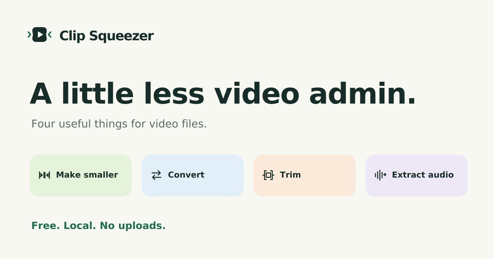
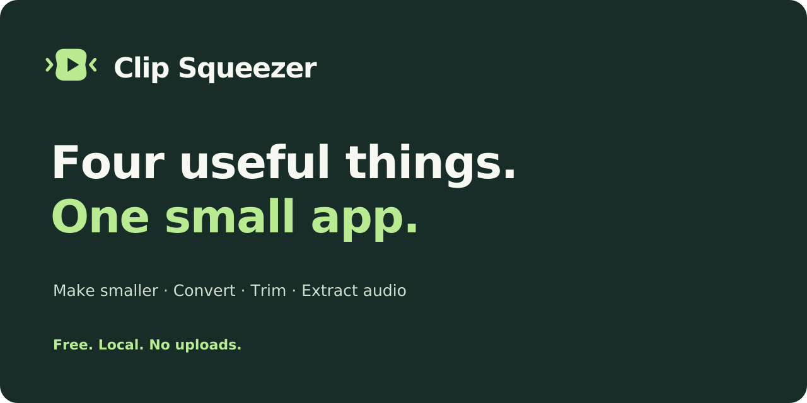

Clip Squeezer / Visual identity / 01
A little less
video admin.
A small, capable utility with a light touch. A video frame with a gentle squeeze, a fresh mint accent, and four unmistakable jobs. Playful in shape. Plain in language.
Usage guide & asset inventory
The signature
Primary / ink on light
Reversed / chalk on ink
Recognisable at 16, 24, 32, 64 and 128 px A quiet welcome / empty-state illustration
Four jobs. One family.
Make smaller
Convert
Trim
Extract audio
Colour with a purpose
Chalk and ink do most of the work. Mint is a recognisable brand surface; fern provides readable links and primary buttons on light screens. Blue, apricot and lilac help distinguish the other jobs, always alongside labels.
Everyday controls
Ready to share

Social / Open Graph · 1200 × 630 · PNG · SVG

Sounds like Clip Squeezer
Free. Local. No uploads.Make smaller. Convert. Trim. Extract audio. Your original stays untouched.
Small words for useful things.Say “Show in folder”, “Keep original”, and “Done”. Avoid promises about exact savings, speed or lossless trimming. Let the result speak for itself.